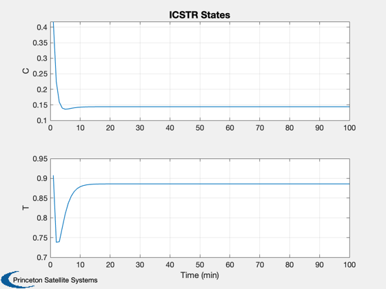

Continuous Stirred Tank Reactor Simulation
Simulates a CSTR with an irreversible first order reaction. The reactor temperature controller is cascaded to a coolant temperature loop, which is a standard approach useed in industrial reactor control.
------------------------------------------------------------------------- Reference: Henson, M. A. and D. E. Seborg. (1997.) Nonlinear Process Control, Prentice-Hall. pp. 198-199. ------------------------------------------------------------------------- See also: RHSICSTR, TimeGUI, Plot2D -------------------------------------------------------------------------
Contents
%-------------------------------------------------------------------------- % Copyright (c) 2001 Princeton Satellite Systems, Inc. % All rights reserved. %-------------------------------------------------------------------------- % Since version 1. %--------------------------------------------------------------------------
Model parameters
The model is nondimensionalized. --------------------------------
clear d;
d.dA = 0.072;
d.gamma = 20;
d.b = 8;
d.beta = 0.3;
d.u = 0;
State
[composition; temperature]
%--------------
x = [1;2];
t = 0;
The control sampling period and the simulation integration time step
---------------------------------------------------------------------
dT = 1;
Number of sim steps
--------------------
nSim = 100; tEnd = nSim*dT;
Plotting arrays
----------------
tPlot = zeros(1,nSim); xPlot = zeros(2,nSim);
Run the simulation
See RHSICSTR.m which gives a model of a CSTR with an irreversible first order reaction. -------------------------------------------------------------------------
for k = 1:nSim x = RK4( 'RHSICSTR', x, dT, t, d ); t = t + dT; tPlot(k) = t; xPlot(:,k) = x; end
Plot results
Open loop results are shown. -------------
Plot2D( tPlot, xPlot,'Time (min)',['C';'T'],'ICSTR States') %-------------------------------------- % $Date$ % $Id: 453bbbd1310ed2902c98a3f4c2cf806d22f7ef9d $